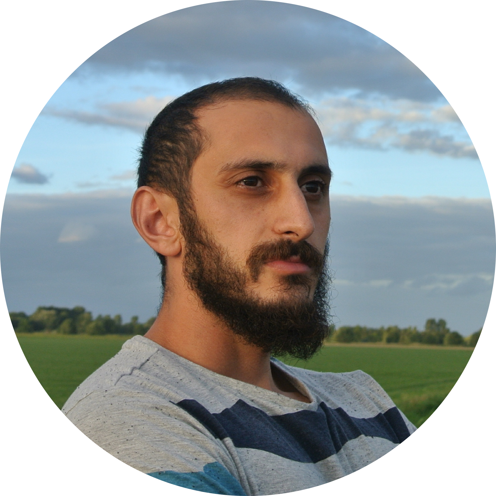

Senior Software Engineer - React / Electron - BSc AI
Eight years as the primary frontend engineer of a multi-exchange crypto trading platform, from the first
Electron/React release to today's desktop, web and mobile builds.
Built the trading workspace, the
replay/backtest engine and the charting integrations.
Since 2026 the emphasis is on architecture, specification
and review in a spec-first, review-gated LLM-assisted workflow, written up with a fully published
worked example at areg.nl/workflow.
BSc Artificial Intelligence, University of Amsterdam.
Altrady is trading software for active crypto traders: market scanning, charting, advanced order execution, bots, portfolio tracking, paper trading, backtesting and journaling in one workspace, across 19+ exchanges. Largest single contributor to the desktop and web app since its first release.
React/Redux management UI and a shared component library for a data-capture platform, plus code review for the team.
Scrum team owning the Java/Spring REST APIs for assisted banking transactions: endpoints, business logic, JUnit/Mockito unit tests, Robot Framework and Gatling automation, deployments across environments.
Full-stack work for a small agency: Java Spring Boot APIs (Hibernate, MySQL, Docker, Jenkins) and ColdFusion web applications for clients including Elsevier, up to nine applications in one sprint.
First solo production system: member administration and exam-enrollment web app (PHP, MySQL, jQuery), from stakeholder interviews and data migration to hosting and support. In daily use for years.
Thesis: Taking up the RoCKIn@Work object recognition challenge with the Bag of Keypoints approach - computer vision and machine learning in C++ (OpenCV, PCL, ROS).
Projects: autonomous exploration with an unmanned aerial system (Netherlands Aerospace Centre), and predicting bird behaviour from GPS and accelerometer data with machine learning.
Subjects: machine learning, computer vision, robotics, logic, speech recognition and synthesis, knowledge systems.
Certifications
Oracle Certified Associate, Java SE 8 (2017)
Professional Scrum Master I (2017)
EFSET English C2 (2015)
Languages
English, Dutch, Armenian